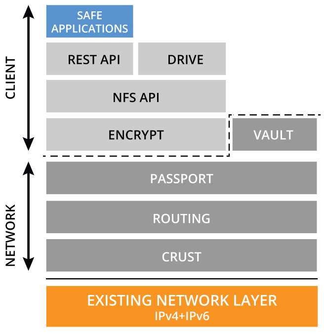

Core Developers
If you have found your way onto this page it probably means that you are a developer looking to contribute to the underlying SAFE network codebase. Thank you for coming, together we can all help to make the Internet a free place once more. Initially we welcome any bug fixes and patches and in time these contributions will turn into new features and further enhancements. Our list of JIRA tasks can be found here.
Improvements to the codebase will be rewarded with safecoin, the currency of the SAFE network. The amount of safecoins awarded will initially be determined by polling the MaidSafe developer mailing list and payments will be allocated from the MaidSafe Foundation. 5% of all safe coins have been set aside for this purpose.
The SAFE network core libraries are written exclusively in Rust. Before contributing please read our code standards page, which is by our own admission, a blatant copy and alteration of the Google guide. It is important that we stipulate and enforce these standards in order that the code base remains manageable and consistent.
Please also be sure to observe the Yum Yum rule, this is critically important!
All our libraries can be found in GitHub and there is plenty of support available, either through our mailing list or via our community run forum. You can also access some MaidSafe technical white papers within the wiki of each project.
In addition to the the core team that exists at our HQ in Troon, we are currently in the process of setting up decentralized core developer pods world-wide. This dissemination of knowledge is an important step in making this project stronger and more robust. Our initial focus has been on San Francisco and continental Europe (more through circumstance than planning), however, we are keen that this movement accelerates throughout the world and would love to hear from anyone who is interested in setting up a pod in their local area. Our hope is that in time these pods will become self sustaining. To find out more vist it the meetup website.
This is the MaidSafe Library stack, it shows how each of the libraries tie in to enable applications to build and run successfully:
You can view a more detailed explanation of what role each library performs here.